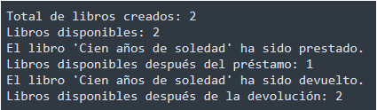

Crea una clase llamada Libro con las siguientes características:
Atributos:
- titulo
- autor
- id (número autogenerado como LIB001, LIB002,... cada vez que se crea uno nuevo).
- disponible (booleano): indica si el libro está prestado o no.
- cantidadLibros (estático): lleva el conteo del número total de libros creados.
- librosDisponibles (estático): rastrea el número de libros que no están prestados.
Constructores:
- Un constructor que inicialice el título y el autor. El atributo id se debe calcular automáticamente y el atributo disponible debe inicializarse como true.
- Incrementa los contadores estáticos de libros cantidadLibros y librosDisponibles al crear un nuevo libro.
Métodos:
- calcularId()
- prestar(): cambia el estado de disponible a false y muestra el mensaje "El libro ha sido prestado con éxito.". Además, deberemos actualizar la variable estática librosDisponibles (-1).
En caso de que el libro ya esté prestado, muestra un mensaje indicando que no se puede prestar.
- devolver(): cambia el estado de disponible a true y muestra el mensaje "El libro ha sido devuelto con éxito.". Además, deberemos actualizar la variable estática librosDisponibles (+1).
Si no estaba prestado, muestra un mensaje indicando que no se puede devolver.
- estaDisponible(): devuelve el valor de disponible.
- Método estático getTotalLibros(): devuelve la cantidad total de libros creados.
- Método estático getLibrosDisponibles(): devuelve la cantidad total de libros creados.
- Sobrescribe toString() para mostrar la info de cada Libro.
